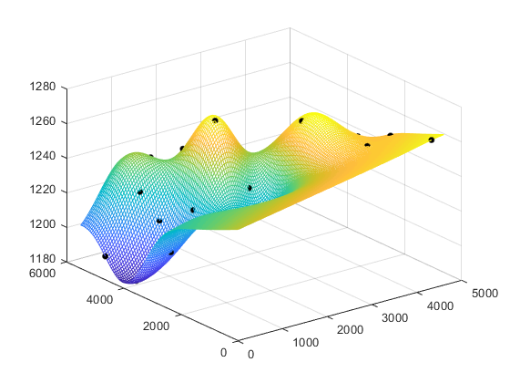
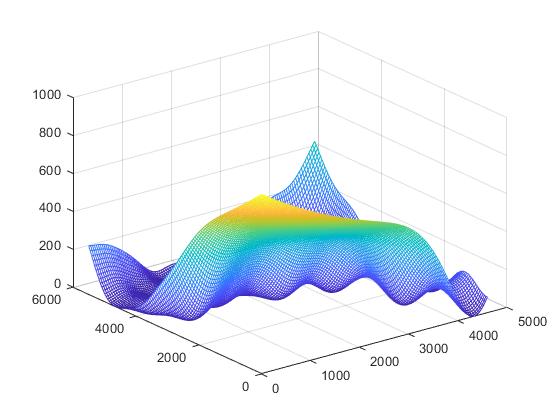

load('zkdata.mat', 'zk') load('zkheight.mat'); theta = [20 20]; lob = [1e-3 1e-3]; upb = [50 50]; [dmodel, perf] = dacefit(zk, fsy, @regpoly1, @corrgauss, theta, lob, upb);%变异函数模型为高斯模型,zk存储了点位坐标值，fsy为观测值 X = gridsamp([0 0;4600 5500], 120); [YX_a,MSE] = predictor(X, dmodel); X1 = reshape(X(:,1),120,120); X2 = reshape(X(:,2),120,120); YX = reshape(YX_a, size(X1)); figure(1), mesh(X1, X2, YX); %绘制预测表面 hold on, plot3(zk(:,1),zk(:,2),fsy,'.k', 'MarkerSize',15) %绘制原始散点数据 hold off; figure(2),mesh(X1, X2, reshape(MSE,size(X1))); %绘制每个点的插值误差大小 